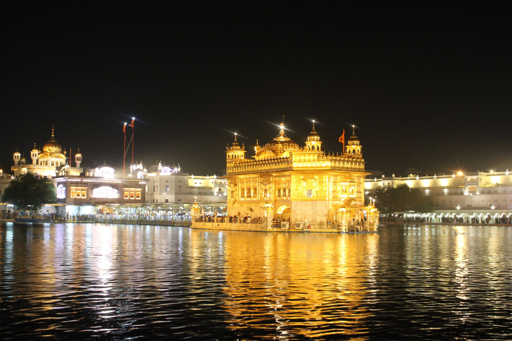
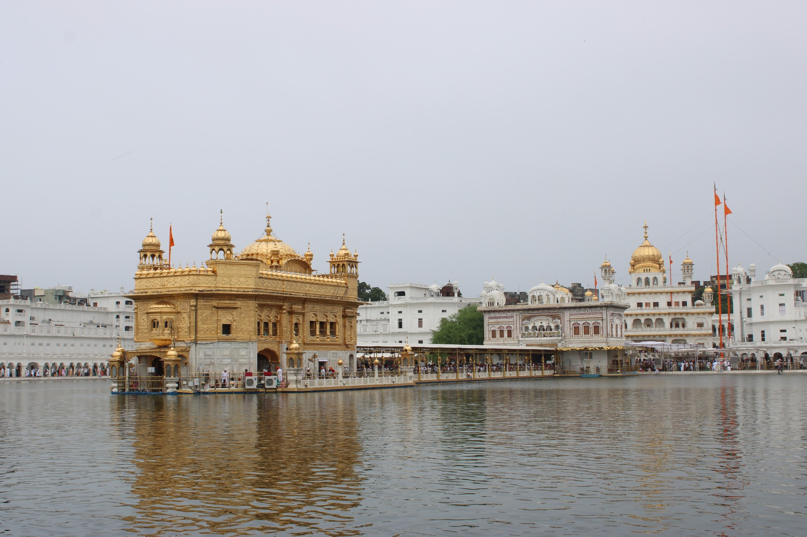

August 2026 · Reflections
Eternal Eyes
When we look upon with eyes of reverence
He's revealed in the details
Whispers embedded in sands of time
Our lives become ever rich
Its pain passing
Joy abiding
With determined faith
And belief eternal
We transcend our self
Crossing the chasm and
Releasing the chains
That shackle the heart

